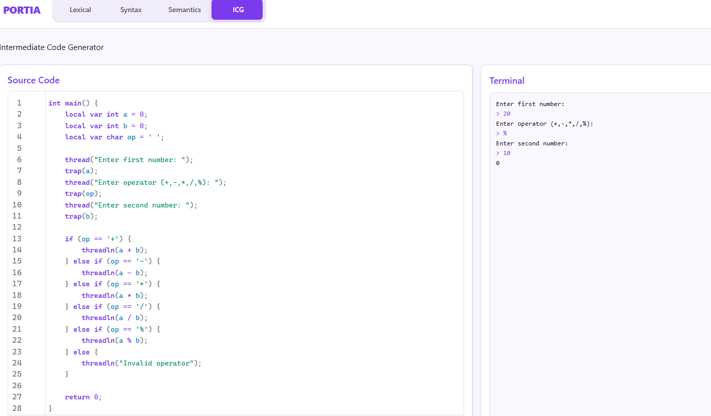
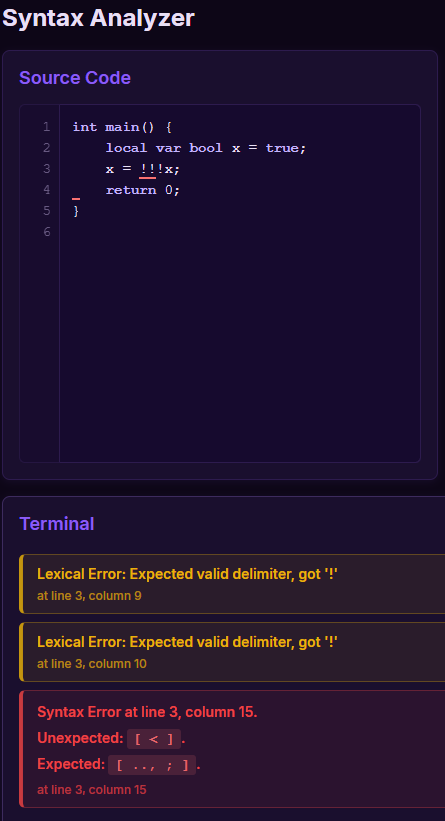
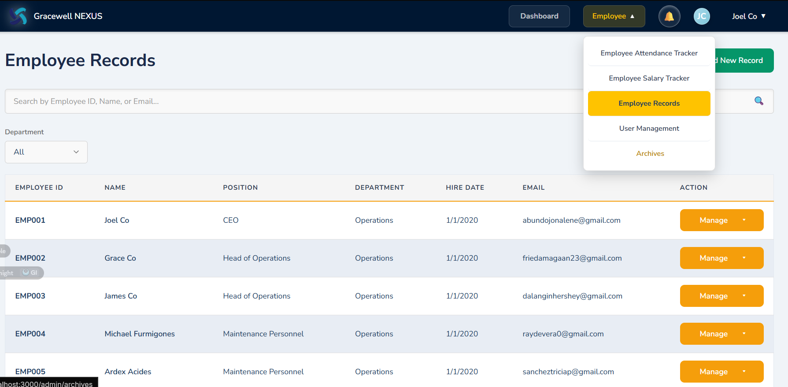

2023 — Present
Pamantasan ng Lungsod ng Maynila
Computer Science student · Dean’s Lister, freshman year
Computer Science Student
Software Quality Assurance & Development
Computer Science student with hands-on experience developing and testing academic software systems. My work includes functional testing, negative and edge-case validation, defect investigation, regression verification, and user-focused software testing.
My Computer Science background helps me approach software from both developer and tester perspectives. Through academic projects, I develop and test application workflows with a focus on software quality and reliability: reproducing defects, validating expected behavior, and checking the edge cases that can affect users.
2023 — Present
Computer Science student · Dean’s Lister, freshman year
2023 — 2024
Student involvement as a Noogler, expanding technical knowledge and peer connections.
2023
Student trainee · Learning through assigned tasks in a structured training program.
Through academic software-development projects, I regularly tested application behavior, reproduced defects, validated fixes, and evaluated edge cases throughout implementation.
Designed positive, negative, boundary, and edge-case inputs based on expected system behavior.
Reproduced unexpected behavior, isolated likely failure conditions, and documented observable errors for correction.
Retested affected workflows after implementation changes to confirm fixes and check for obvious regressions.
Evaluated forms, validation feedback, navigation, data presentation, and application workflows from the user perspective.
Selected software-development projects highlighting hands-on testing, validation, and defect investigation.

Academic project · Development + QA
PORTIA is an academic compiler project implementing lexical, syntax, and semantic analysis. Testing focused on validating accepted and rejected source inputs, confirming error detection, and verifying clear diagnostic feedback.
Contribution Software development and academic testing, including input validation and diagnostic verification.
Technologies Compiler analysis: lexical, syntax, and semantic stages. Implementation stack not specified.
Live DemoMalformed source input was intentionally submitted to verify that PORTIA rejected invalid syntax or lexical structure and correctly surfaced diagnostic information identifying the error location.


These screenshots show intentional test scenarios and error-path validation, rather than a record of production defects.

Academic project · Functional QA
Gracewell Nexus is an academic Human Resources Information System supporting employee information and workforce-related workflows. Testing focused on functional behavior, form validation, error handling, and user-facing workflows.
Contribution Collaborative academic project — this case study highlights my software development and testing contributions.
Technologies Web-based HRIS with QR-based employee identification. Implementation stack not specified.
Live DemoFor entry-level Software QA / QA Analyst opportunities, get in touch.
abundojonalene@gmail.com